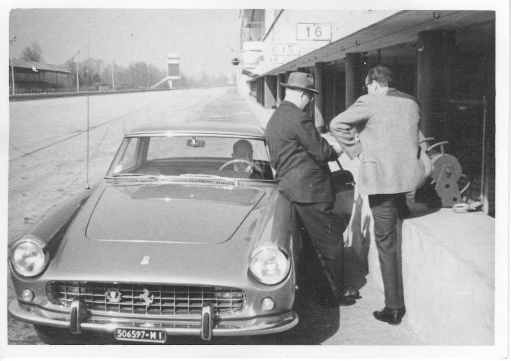
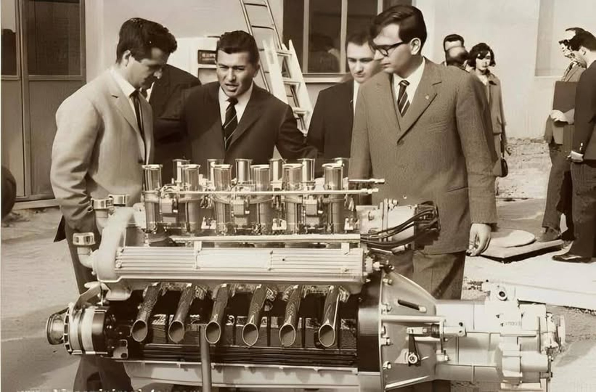
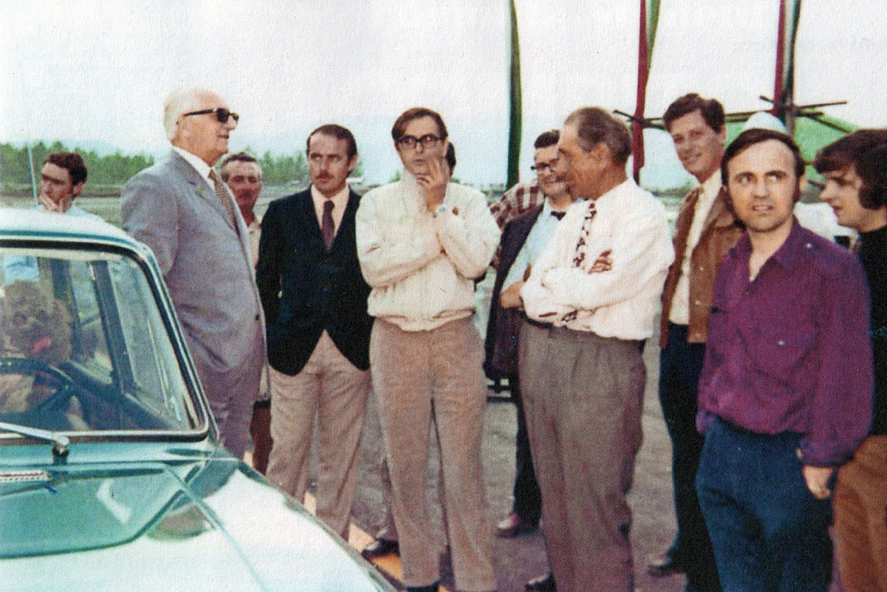
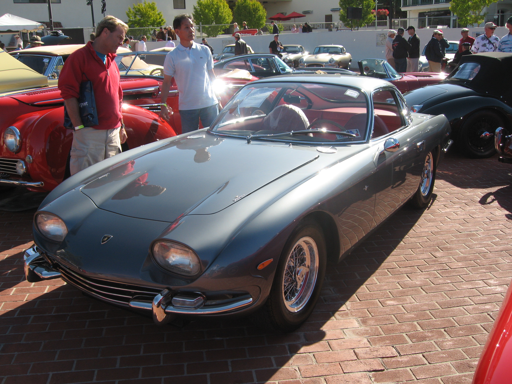

藍寶堅尼 vs 法拉利：一場由「拖拉機老闆被洗臉」引發的頂級超跑復仇記
共 50 幕分鏡 · 預估成片總長度：11分16秒 (676.6s) · 自動生成於 20261016_Lamborghini
🎞️ 各場景分鏡與語音審查
001_shot_1 · 大家好！我是白兔！你有沒有想過街
時長: 13.05s

002_shot_2 · 回到上世紀五十年代末的義大利北部
時長: 13.06s

003_shot_3 · 但在繁榮背後
時長: 17.83s

004_shot_4 · 他靠改裝廢棄軍車起家
時長: 18.27s

005_shot_5 · 但他最常開的那輛法拉利二五零
🖼️ 畫中畫 PiP
時長: 14.54s

疊加參考圖 (PiP)：

006_shot_6 · 這讓身為機械專家的費魯齊歐
時長: 12.27s

007_shot_7 · 結果拆開離合器總成的那一刻
時長: 13.78s

008_shot_8 · 其核心規格跟他自家便宜的拖拉機離
時長: 10.61s

009_shot_9 · 於是一九六二年秋天
時長: 9.47s

010_shot_10 · 他在辦公室裡對法拉利創始人恩佐法
時長: 13.02s

011_shot_11 · 然而賽車教父恩佐甚至連頭都沒有抬
時長: 14.26s

012_shot_12 · 你也許懂得在泥地裡刨土
時長: 14.82s

013_shot_13 · 他在回程的公路上暗自發誓
時長: 16.3s

014_shot_14 · 剛好在這個節骨眼上
時長: 14.33s

015_shot_15 · 其中就包括法拉利傳奇總工程師喬托
時長: 14.25s

016_shot_16 · 他的合約條件非常簡單粗暴
🖼️ 畫中畫 PiP
時長: 18.11s
無畫面
疊加參考圖 (PiP)：

017_shot_17 · 在金錢與復仇欲望的雙重刺激下
時長: 14.82s

018_shot_18 · 這在當時把法拉利的同排量引擎狠狠
🖼️ 畫中畫 PiP
時長: 10.17s

疊加參考圖 (PiP)：

019_shot_19 · 一九六三年五月
時長: 16.62s

020_shot_20 · 他們接下來要面對的
時長: 15.1s

021_shot_21 · 可直到開展前幾天
時長: 14.5s

022_shot_22 · 如果展覽開天窗
時長: 5.4s

023_shot_23 · 在生死關頭
時長: 14.46s

024_shot_24 · 他把引擎蓋牢牢鎖死
時長: 10.65s

025_shot_25 · 車展結束後
時長: 10.25s

026_shot_26 · 一九六四年正式量產的藍寶堅尼三五
🖼️ 畫中畫 PiP
時長: 15.7s
無畫面
疊加參考圖 (PiP)：

027_shot_27 · 歐洲主流汽車雜誌試駕後給出了近乎
時長: 14.22s

028_shot_28 · 費魯齊歐狠狠甩了恩佐一記響亮的耳
時長: 15.7s

029_shot_29 · 但工廠裡那幫平均年齡不到三十歲的
時長: 11.51s

030_shot_30 · 當時恩佐法拉利曾公開嘲諷
時長: 15.43s

031_shot_31 · 達拉拉天才般地把龐大的十二缸引擎
時長: 15.82s

032_shot_32 · 緊接著年僅二十七歲的設計奇才甘迪
時長: 14.92s

033_shot_33 · 最高時速高達二百八十公里
時長: 15.62s

034_shot_34 · 各國皇室貴族
時長: 14.42s

035_shot_35 · 被侮辱的拖拉機商人
時長: 10.57s

036_shot_36 · 邁入二十世紀七十年代
時長: 16.26s

037_shot_37 · 藍寶堅尼帝國賴以生存的造血動脈
時長: 15.46s

038_shot_38 · 壓垮駱駝的最後一根稻草
時長: 11.63s

039_shot_39 · 面對每天堆積如山的債務
時長: 13.42s

040_shot_40 · 他沒有在媒體面前哭訴
時長: 11.45s

041_shot_41 · 而另一邊不可一世的恩佐法拉利
時長: 11.45s

042_shot_42 · 賽車皇帝失去了對民用車工廠的絕對
時長: 12.62s

043_shot_43 · 這場由一句羞辱引發的工業戰爭
時長: 11.49s

044_shot_44 · 這場看似荒唐的私人報復
時長: 11.82s

045_shot_45 · 老人笑著搖了搖頭說
時長: 11.25s

046_shot_46 · 而傲慢了一輩子的恩佐
時長: 10.88s

047_shot_47 · 資本市場從來都是極其殘酷的
時長: 11.45s

048_shot_48 · 但這場復仇記留給後人最深刻的啟示
時長: 15.26s

049_shot_49 · 好了
時長: 13.7s

050_shot_50 · 在評論區留下你的看法吧
時長: 14.58s